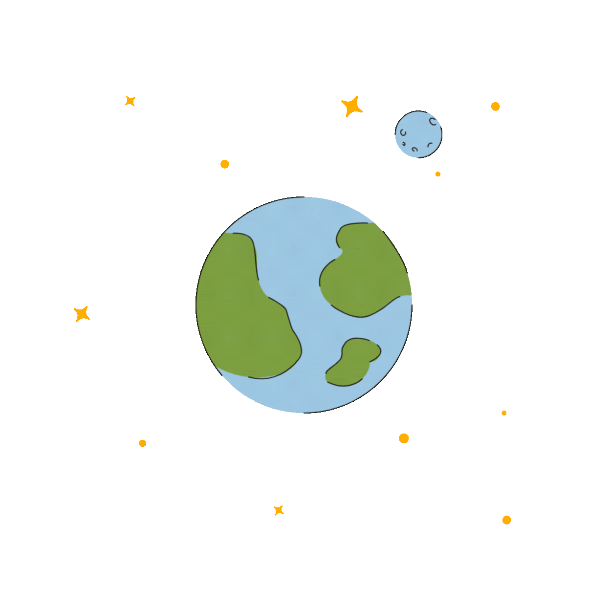
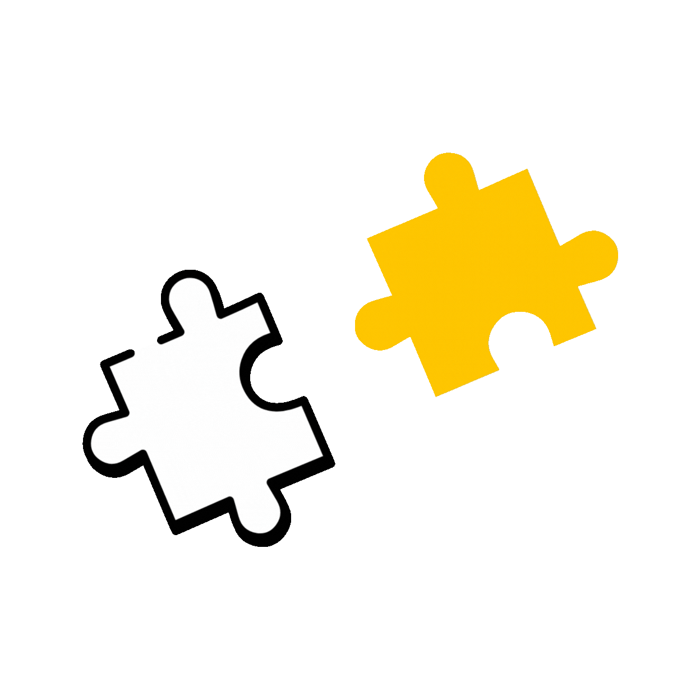

ในโลกที่ขับเคลื่อนด้วยพลังงานวิเศษ…

เราทุกคนล้วนมี "พลังงาน"
ที่ไม่เหมือนใคร
ทุกการตัดสินใจ…
คือพลังงานที่ส่งออกไปรอบตัว 💫
ชุดคำถามนี้ จะช่วยสะท้อนวิธีคิด
และตัวตนที่น่ารักของคุณ
ตอบให้ครบทั้ง 12 ข้อ
แล้วมารับพลังงานประจำตัวกันเลยย
Energy Buddy Quiz⚡
ยินดีต้อนรับสู่พื้นที่ค้นหาตัวตน!
ลึกๆ แล้วพวกเราทุกคนเปรียบเสมือน
"แหล่งกำเนิดพลังงาน"
แล้วคุณล่ะ…เป็นพลังแบบไหน ?
(ตอบไปเรื่อยๆ เล่นกันขำๆ ไม่ต้องคิดมากน้าาา)
สวัสดีวันจันทร์
💛💛💛💛💛
วันเริ่มต้นสัปดาห์
คุณกำลังใช้ชีวิตอันสดใส
จนกระทั่ง...

คุณได้รับข้อความจากหัวหน้า
ต้องเริ่มแล้ว… ตอนนี้เลย💥08:00 am
หลังจากอ่านจบ คุณรู้สึกว่า ....
ไม่ว่าจะรู้สึกยังไง... 😅
คุณก็ได้รับ
Assign Project นี้แล้ว
สูดหายใจลึกๆ...
แล้วมาเริ่มกันดีกว่าาาา
ว้าว! รูปร่างของคุณเริ่มชัดขึ้นแล้ว ✨

พลังงานของคุณกำลังก่อตัวเป็นรูปร่างสุดน่ารัก...
ไปลุยกันต่ออีกนิดเดียว ฮึบๆ
ตอบครบถ้วนแล้ว✔
ก่อนอื่น... อยากจะบอกว่า
พลังของคุณ
ไม่ได้เกิดขึ้นโดยบังเอิญ
แต่คือรหัสพลังงานที่ซ่อน
อยู่ในตัวคุณ ผ่าน...
GRC ⚖️
(พลังขับเคลื่อนองค์กร)
นอกจากนี้
ยังมีอีกหนึ่งรหัสพลังงาน...
DEI&B 🌈
(พลังแห่งหัวใจและผู้คน)
เมื่อ "ระบบที่เป๊ะ"
ผสานกับ "ใจที่เปิดรับ"
จึงเกิดเป็นพลังงานที่พิเศษ
ในแบบของคุณ!
กำลังวิเคราะห์พลังงาน...
⏳

ท๊าดาาาาาาา🎉
นี่คือพลังงานของคุณ!
"คุณคือชิ้นส่วนสำคัญที่ทำให้ทีมสมดุลและเติบโต" ✨